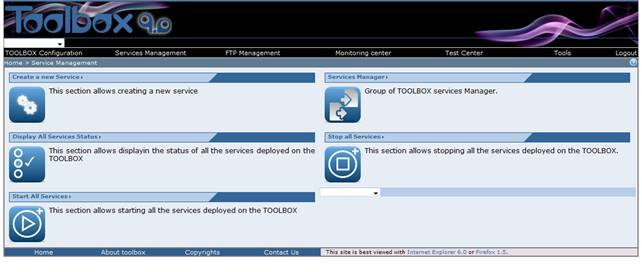
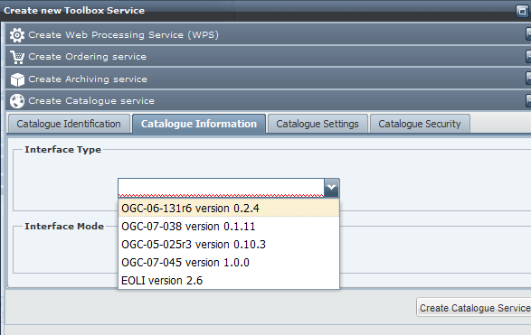
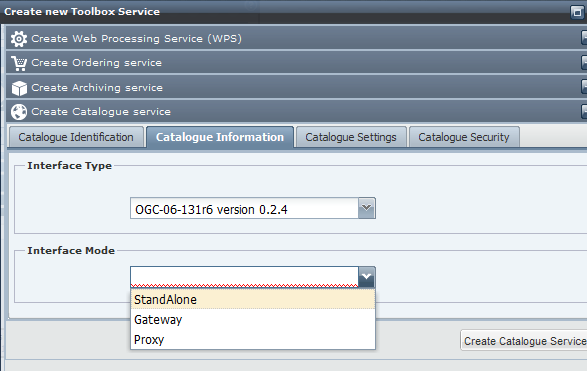
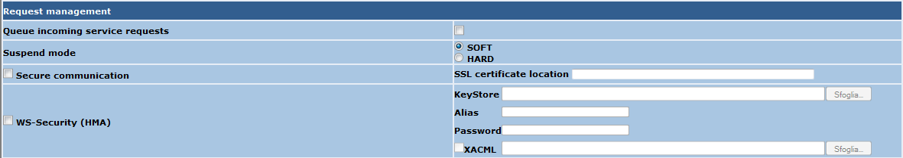
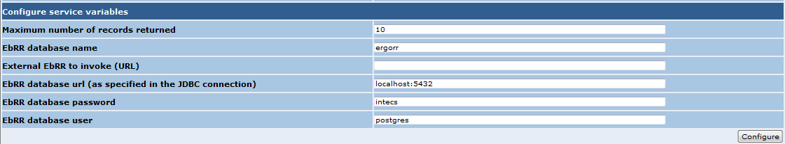
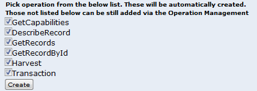

To create a new Stand Alone Catalogue Service follow these steps.
Perform the login procedure.
To create a new Stand Alone Catalogue Service follow these steps.
Perform the login procedure.
Click on the Service management link in the toolbar. The browser should display

Click on the "Create a new Service" section link. The following page should be displayed

select the "Create Catalogue Service" option and fill the Service Info tab using a unique Service Name. This is the name of the service that will be used to create the WSDL file. Enter also an abstract and a Description of the service.
Select the Catalogue Information tab and select the Interface Type (currently only the OGC-06-131r6 interface allow deploying a stand alone catalogue). Select the OGC-06-131r6 interface (EOP EbRIM catalogue)

The Interface Mode content will depend on the type of interface you have selected

Select the StandAlone Interface Mode, then click on the Create Catalogue Service Button. The Browser should now display a successful message. Click on OK. The browser now should provide a list of all the schema associated to this service and some additional parameters to be set.

In the following a description of the "Service information" section
A summary of all the selected options is now displayed.
An additional section "Configure service variables" section could be present depending on the Interface mode that have been selected.

 In order to deploy a StandAlone catalogue service an instance of the EbRR database on a postgress server has to be created. Please follow the instructions reported here.
In order to deploy a StandAlone catalogue service an instance of the EbRR database on a postgress server has to be created. Please follow the instructions reported here.
The following variables have to be set
Fill the variable as appropriate, then click on Configure. The list of the availble operation that can be deployed is presented.

Select the operations you want to deploy then click on Create. The service configuration page should now be displayed.